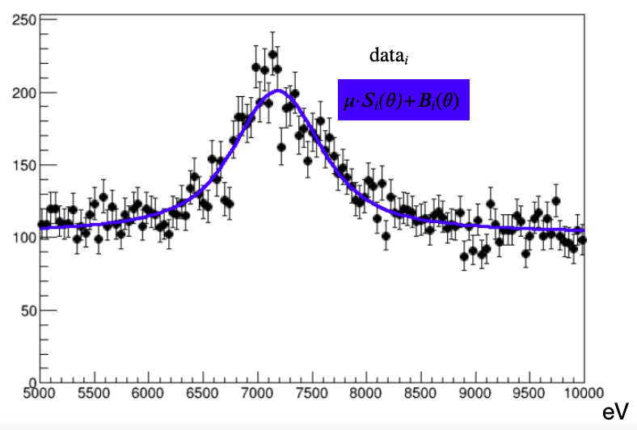
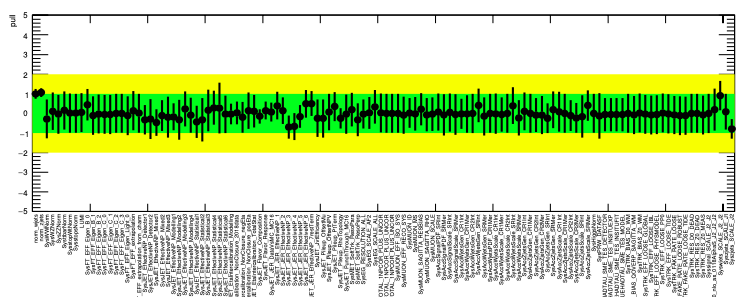
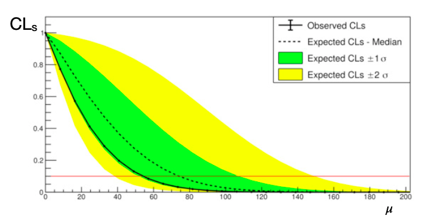
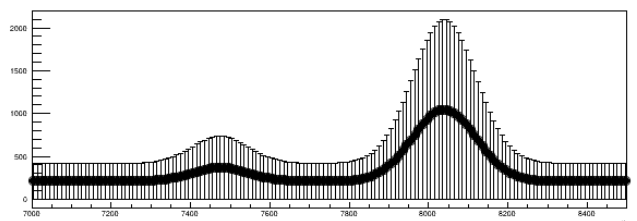
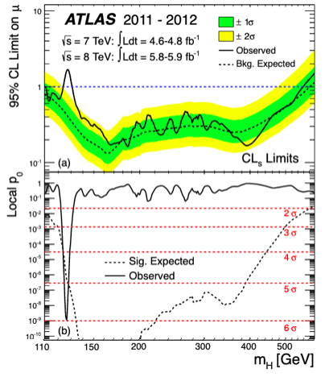
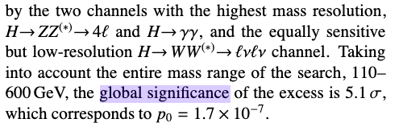
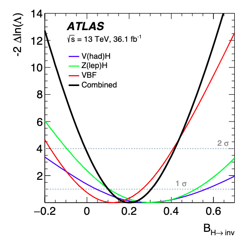

Statistical methods for particle and nuclear physics
A short tour
Fabrizio Napolitano, INFN-LNF fabrizio.napolitano@lnf.infn.it EXOTICO: EXOTIc atoms meet nuclear COllisions for a new frontier precision era in low-energy strangeness nuclear physics
20th October 2022, ECT* Trento, Italy
Why statistics is important
do you see the particle at 6 GeV?

Oops-Leon Particle (Leon Lederman, $\Upsilon$)
https://doi.org/10.1103/PhysRevLett.36.1236
Taking Data..
..will the excess stay..
..or disappear with more data?
Outline of the talk
- Likelihoods
- Discoveries
- Exclusions
- Confidence Intervals
- Bayesian statistics
Disclaimer! based on talks from N. Berger, W. Verkerke, G. Cowan
Hypothesis testing
Null Hypothesis $H_0$: only background is present p-value or significance: how strong is the rejection| Data Disfavors $H_0$ | Data Favors $H_0$ | |
| $H_0$ is false | Discovery | Missed Discovery |
| $H_0$ is true | False Claim | No new physics, nothing found |
Likelihood
Probability Density Function (PDF) for the data $p(\text{data}|\mu)$
encodes the entire process
We want to learn something about $\mu$ from the data:
Likelihood $\mathcal{L}(\mu) = P(\text{data}|\mu)$
Likelihood
Want e.g. to estimate the parameter (centroid etc.)
use the Maximum-Likelihood Estimator (MLE)
$\hat{\mu}$ is the parameter value which maximizes $\mathcal{L}(\mu)$
Want to test hypothesis: Neyman-Pearson Lemma
Null hypothesis $H_0$, alternate hypothesis $H_1$
The most potent discriminator is the likelihood ratio
$$ \frac{\mathcal{L}(\mu = \color{red}{\mu_1})}{\mathcal{L}(\mu = \color{blue}{\mu_0})} $$
Minimizes missed discoveries, need alternate hypothesis
How to build a (binned) likelihood
Likelihood is the core description of the statistical processes
$$ \mathcal{L}(\text{data}|\mu,\theta) = \prod_{i \in bins} \mathcal{P}(\text{data}_i | \mu \cdot S_i(\theta)+B_i(\theta)) $$
$\mu \cdot S_i(\theta)+B_i(\theta)$ is the prediction of the events in the bin $i$
data$_i$ is the number of observed events in the bin $i$

Likelihood example
Likelihood example
Likelihood example
Nuisance and systematics
Parameter of interest (POI ), e.g. signal yield, peak position etc
Nuisance Parameters (NP): all other parameters, representing properties of the data
If they represent systematic (e.g. energy scale) they need additional terms in the likelihood
$$ \mathcal{L}(\color{green}{\mu},\color{red}{\theta}) = \mathcal{L}(\text{data}|\color{green}{\mu},\color{red}{\theta}) \times C(\text{aux. data}|\color{red}{\theta}) $$
Constraint C is implemented directly in the combined likelihood
Takes care of experimental uncertainties
Gaussian often used $ C(\text{aux. data}|\color{red}{\theta}) = G(\theta^{obs},\sigma_{syst}|\color{red}{\theta})) $
Nuisance example
Nuisance example
Categories
Can divide the analysis in multiple regions
Usually Signal Regions (SR) and Control Regions (CR)
Defined in a way to have control over the NPs, and have better sensitivity
$$ \mathcal{L}(\text{data}|\mu,\theta) = \prod_{i \in \text{cat}} \mathcal{L}_i(\text{data}_i|\mu,\theta)$$
Categories example
Control Region
Categories example
Control Region
Multidimensional problem; $\hat\mu,\hat\theta$ such that
$\mathcal{L}(\text{data}|\hat\mu,\hat\theta) = maximum $
Test Statistics
We want to construct a way to discriminate against the null hypothesis $\color{blue}{H_0}$ (background-only $\mu = 0$) and the signal hypothesis $\color{red}{H_1}$ ($\mu = 1$)
Reminder: the Neyman-Pearson Lemma is the tool to use.
Use as test-statistics
$$ t_0 = -2\log\frac{\mathcal{L}(\color{blue}{\mu=0})}{\mathcal{L}(\color{red}{\hat\mu})} = -2\log \lambda(\hat\mu)$$
How is $t_0$ distributed?
Estimate with toy MC or asymptotically
Test statistics example
$\mathcal{L}(\color{blue}{\mu=0})$ small, $\mathcal{L}(\color{red}{\hat\mu})$ large; $-2\ln(\frac{\mathcal{L}(\color{blue}{\mu=0})}{\mathcal{L}(\color{red}{\hat\mu})} )$ large
$t_0$ distribution (in the null hypothesis)
$t_0$ observed
p-value
Test statistics example
$\mathcal{L}(\color{blue}{\mu=0})$ similar to $\mathcal{L}(\color{red}{\hat\mu})$ ; $-2\ln(\frac{\mathcal{L}(\color{blue}{\mu=0})}{\mathcal{L}(\color{red}{\hat\mu})} )$ to zero
$t_0$ distribution (in the null hypothesis)
$t_0$ observed
p-value
$t_0$ distributed like a $\chi^2$ (if $\mu$ Gaussian)
approximation not valid for few events (<20)
Need to use MC toys in that case
Profile Likelihood Ratio (PLR)
Likelihood with NP (systematic uncertainties and data parameters)
Which NP values to use when testing hypothesis ($\color{blue}{H_0}$, $\color{red}{H_1}$)?
-> Use best fit values
Profile Likelihood Ratio (PLR) $$ t_{\mu_0} = -2 \log \frac{\color{blue}{\mathcal{L}(\mu=\mu_0,\hat{\hat{\theta}}_{\mu_0})} } {\color{red}{\mathcal{L}(\hat\mu,\hat\theta)}} $$
$\hat{\hat\theta}_{\mu_0}$, values that maximize $\mathcal{L}$ for fixed $\mu_0$ (conditional),
$\hat\theta$, values that maximize the $\mathcal{L}$ overall (unconditional).
Wilks' theorem: PLR follows a $\chi^2$ distribution as well.
NP pull
Need to see how the NPs behave after the fit
Should be:
- within their central value: $\hat\theta \simeq \theta_{obs}$
- with their uncertainty: $\sigma_{\hat{\theta}} \simeq \sigma_{\theta_{sys}}$
if not, need to investigate

Test statistics for discovery
Discovery: when null hypothesis $\color{blue}{H_0}$ is rejected
The test must be one-sided: for $\hat\mu<0$, perfect agreement with the null hypothesis
$$ q_0 =
\begin{cases}
-2 \log \frac{\color{blue}{\mathcal{L}(\mu=\mu_0,\hat{\hat{\theta}}_{\mu_0})} } {\color{red}{\mathcal{L}(\hat\mu,\hat\theta)}} & \text{if $\hat\mu\geq 0$}\\
0 & \text{if $\hat\mu<0$}\\
\end{cases}
$$
Significance $Z = \Phi^{-1} (1-p_0)$,
$\Phi$: Gaussian CDF
Look Elsewhere effect
when performing scan over unknown parameter (mass, shift etc)
when having multiple signal regions
it is more likely to find an excess simply by chance
take this into account with the Look Elsewhere Effect (LEE)
Two way to deal with that
- Brute force: MC toys.
- Asymptotic approximation of the trial factors
$$ p_{global} = p_{local} \cdot ( 1 + \frac{1}{p_{local}}\langle N_{bump} (Z_{test})\rangle \cdot e^{\frac{Z^2_{local}-Z^2_{test}}{2}} ) $$
$\langle N_{bump} (Z_{test})\rangle $ is average number of excesses with $Z>Z_{test}$
Upper Limits
$t_0$ distribution (in the null hypothesis)
$t_0$ observed
p-value < 5%
Use $-2\log\frac{\mathcal{L}(\color{blue}{\mu=\mu_0})}{\mathcal{L}(\color{red}{\hat\mu})}$
Use $\mu_0$ to be excluded as null hypothesis $H_0$
and $\hat\mu$ as alternative hypothesis $H_1$
Raise $\mu_0$ until p-value=5% (95% CL)
$\mu_1$ -> No exclusion
Upper Limits
$t_0$ distribution (in the null hypothesis)
$t_0$ observed
p-value > 5%
Use $-2\log\frac{\mathcal{L}(\color{blue}{\mu=\mu_0})}{\mathcal{L}(\color{red}{\hat\mu})}$
Use $\mu_0$ to be excluded as null hypothesis $H_0$
and $\hat\mu$ as alternative hypothesis $H_1$
Raise $\mu_0$ until p-value=5% (95% CL)
$\mu_2$ -> Too strong exclusion
Upper Limits
$t_0$ distribution (in the null hypothesis)
$t_0$ observed
p-value = 5%
Use $-2\log\frac{\mathcal{L}(\color{blue}{\mu=\mu_0})}{\mathcal{L}(\color{red}{\hat\mu})}$
Use $\mu_0$ to be excluded as null hypothesis $H_0$
and $\hat\mu$ as alternative hypothesis $H_1$
Raise $\mu_0$ until p-value=5% (95% CL)
$\mu_3$ -> exclusion
CL$_\text{s}$ Limits
Problem: using $p_{\mu_0}$ can get strong limits for underfluctuations
Have to modify the p-value to avoid setting limits without sensitivity
CL$_\text{s}$ = $p_{\mu_0}/p_{\mu=0}$ = CL$_\text{s+b}$/CL$_\text{b}$
Slightly more conservative, HEP standard

CL$_\text{s}$ Limits, expected
How to compare observed limits (from the data) to the background-only hypothesis?
computed using:
- MC: generate toys in the $H_0$ hypothesis, use median and std. dev.
- "Asimov dataset" with no fluctuations; the $\mathcal{L}$ maximizes in the $H_0$ hypothesis

Higgs discovery

For each $m_H$ point,
the 95% CL$_\text{s}$ is computed
as in the slide before

Confidence intervals
Use as test statistics
$$t_{\mu_{0}} = -2\log\frac{\mathcal{L}(\mu=\mu_{0},\hat{\hat\theta}_{\mu_{0}})}{\mathcal{L}(\hat\mu,\hat\theta_{\mu_{0}})}$$
to exclude $\mu$ values outside the interval
Example: Higgs to invisible

Confidence Intervals example
$\mathcal{L}(\color{blue}{\mu=\mu_1})$ small, $\mathcal{L}(\color{red}{\hat\mu})$ large; $-2\ln(\frac{\mathcal{L}(\color{blue}{\mu=\mu_1})}{\mathcal{L}(\color{red}{\hat\mu})} )$ large
$t_\mu$ vs $\mu$
$\mu$
$\mu_1$
Confidence Intervals example
$\mathcal{L}(\color{blue}{\mu=\mu_2})$ small, $\mathcal{L}(\color{red}{\hat\mu})$ large; $-2\ln(\frac{\mathcal{L}(\color{blue}{\mu=\mu_2})}{\mathcal{L}(\color{red}{\hat\mu})} )$ large
$t_\mu$ vs $\mu$
$\mu$
$\mu_1$
$\mu_2$
Confidence Intervals example
$\mathcal{L}(\color{blue}{\mu=\mu_3})$ similar to $\mathcal{L}(\color{red}{\hat\mu})$; $-2\ln(\frac{\mathcal{L}(\color{blue}{\mu=\mu_3})}{\mathcal{L}(\color{red}{\hat\mu})} )$ small
$t_\mu$ vs $\mu$
$\mu$
$\mu_1$
$\mu_2$
$\mu_3$
1
crossing $t_\mu = 1$ gives the $\pm 1\sigma$
How to do it: pyhf
Python implementation of HistFactory
Bayesian statistics

Bayesian statistics

Bayesian statistics

Metropolis-Hastings algorithm
https://chi-feng.github.io/mcmc-demo/app.html?algorithm=RandomWalkMH&target=bananaBayesian Analysis Toolkit
https://bat.github.io/BAT.jl/stable/Conclusions
- Statistics important for precise claims
- Can use likelihood to build arbitrarily complex analyses
- Can build in systematics uncertainties
- Test statistics can be used for: Discovery, Limit setting and param estimation
- Bayesian methods: no need test statistics, need priors